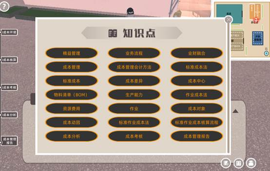
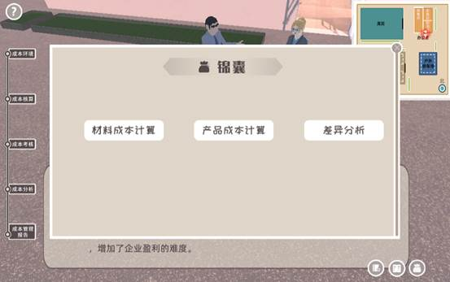
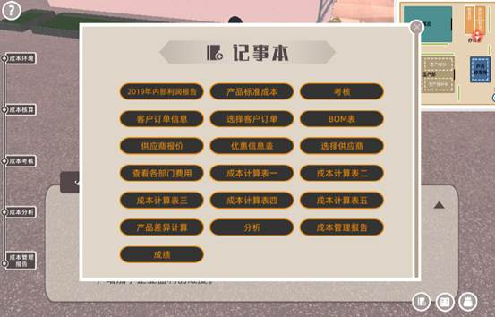
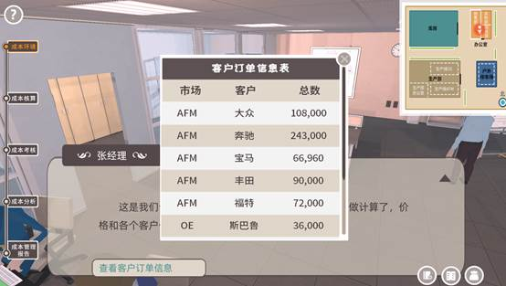
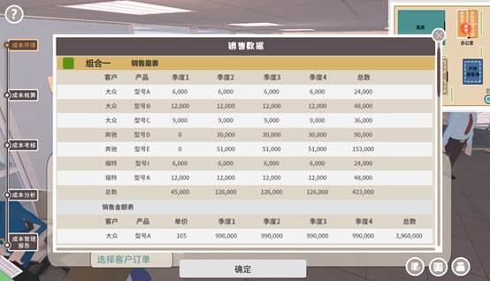
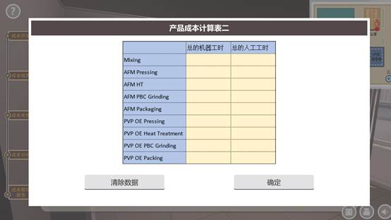
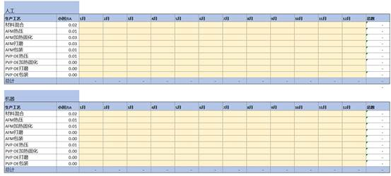
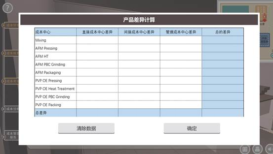

打开网址，登陆界面，进入虚拟仿真环境。点击开始实验进入实验环节。仿真环境包括：成本环境，成本核算，成本考核，成本分析，成果管理报告五个模块。
学生使用上下左右或者WASD键可自由移动，同时鼠标右键可进行视觉角度转换，类似玩游戏的操作方式，为方便更多人使用，软件也同时设置了自动行走，再右上角的小地图框里，操作者可直接点击图标的位置，主人公可直接走过去。
注：在多次测试后，在对话完成后，主人公开始到各个部门操作时，我们隐藏了人物，这样可以降低人物行走操作的难度，但右上角的小地图依然可以显示人物所在的位置。
在右下角配有知识点讲解，知识锦囊讲解视频，记事本功能，方便学生查看辅助实验进行。知识点里时软件涉及到的财务知识原理，方便学生时时查看学习；知识锦囊主要针对在成本核算时材料成本，产品成本，差异分析三块，为更好帮助学生理解，录制了由老师讲解的具体计算视频，当计算遇到难处，可点这里寻找答案；记事本保留了在软件里所看到的每个表，包括自己计算的表格，辅助学生结合所有的数据进行分析，全面去理解领悟企业成本分析的逻辑。



实验一共分为五个模块，一共12个步骤，以下为具体的说明。
关键步骤 1：了解公司概况和运用标准作业成本法的背景。（信息获取、制定方案步骤）
内容：认知公司经营环境、业务及财务情况。具体包括：
（1）了解公司背景和市场环境；
（2）阅读企业内部财务报告，了解并分析企业整体情况；
（3）了解标准作业成本法的基本理念；
通过总经理和财务总监以及主人公的对话，阅读企业2019年度内部利润表，了解公司过去销售金额、销售总成本、毛利率、净利润、息税前利润和息税折旧及摊销前利润，初步感受成本管理现状及问题，了解企业实施标准作业成本法的背景，理解成本分析计算的必要性，让学生可在大脑中建立一个整体框架。
目的：
培养学生财务分析能力，学生能对企业的初始的总体生产经营环境和企业的经营状况有一定的了解，方便后面标准作业成本法核算实验的开展。
实验方法：
行动学习法的信息获取及制定方案步骤、观察法。
知识：
需预先掌握一定的成本管理方法，培养学生对管理会计成本管理过程中成本环境、成本环境和管理会计工具选择和应用的进一步理解。
关键步骤 2：公司作业认定。（讨论决策步骤）
内容：
现代企业将所有的费用都通过作业成本中心收集，每一个成本中心都代表了企业里的一项职能，在这家企业里，我们分为了19个作业成本中心，大类分了四类管理部门、间接部门、生产部门、销售研发，其中里面的各个成本中心都代表了一个独立的作业类型，企业通过不同的成本中心将发生的费用进行收集，这样清晰的可以看到来自于哪一个作业的成本高或者低，也为我们后面的成本分析打下了好的基础。
（1）了解现代制造业公司的不同部门的职能
（2）熟悉作业类型，对不同的作业进行划分和归类
（3）了解作业成本中心与费用归集的对应关系。
目的：
培养学生业财融合能力，学生能通过对企业业务流程的了解，识别分析企业的作业，将作业按照成本中心进行归集，为标准作业成本确定提供前提。
实验方法：
行动学习法的讨论决策步骤、观察法。
知识：
需预先掌握作业成本法中作业、作业确定、资源费用、成本对象、成本动因、责任会计等核心概念，并能将上述概念应用于企业实际业务。
关键步骤 3：制定标准作业成本（讨论决策步骤）
内容：
基于划分的作业，提前制定今年的产品的标准成本。
这里我们将直接给出根据预算做的产品标准成本，通过图片可以预先了解我们将要产品成本是从三个方面汇总：直接成本中心、间接成本中心、管理成本中心，图表有介绍三种成本中心分别对应哪些作业成本中心，最后归集到直接生产部门的作业成本中心（材料混合、AFM热压、AFM加热固化、AFM打磨、AFM包装、PVP OE热压、PVP OE加热固化、PVP OE打磨、PVP OE包装），其中销售研发我们并不考虑将其分摊到产品中，而是通过摊销逐年分摊。
实际成本的计算也将遵循一样的逻辑，这样才可最后实现成本的分析对比，对企业运营起到真正的作用。
目的：
培养学生成本管理过程中作业成本法、标准成本法两个管理会计工具方法融合能力，学生能在作业确定的基础上，制定标准作业成本。为标准作业成本法应用提供基础。
实验方法：
行动学习法的讨论决策步骤、观察法。
知识：
需预先掌握作业成本法、标准成本法等成本管理中应用的管理会计工具的核心概念，形成标准作业成本法的概念。
关键步骤 4：获取实际成本计算所需的销售订单（实施控制步骤）
内容：
主人公到销售部门，与销售经理对话，销售部门通过与客户报价谈判等获得订单，学生不需要将所有订单进行生产，这里我们设置了3种销售组合，选择一种，作为此次实验的销售数据。3种组合有不同的优势劣势，这里的选择决定了你的得分，学生需要稍微斟酌自己的选择。
目的：
培养学生解决问题能力，使得学生通过合理选择和使用管理会计工具选择销售组合，实现实验目标，形成生产能力与生产决策、生产决策与成本管理的对应，达成业财融合效果。
实验方法：
行动学习法的实施控制步骤、控制变量法。
销售部门与客户的前期谈判，获得订单，并对产品价格进行协商，签合同。
知识：
生产能力利用和生产决策的关系，生产决策和成本管理的关系。能根据企业实际情况做出选择和判断。


关键步骤 5：实际成本核算所需的材料成本计算（实施控制步骤）
内容：
采购部根据选择的销售组合对应BOM的原材料进行采购。学生依据不同供应商的优惠条件，从3家供应商中选择成本最优化的一家。选择后通过产品的BOM确定的所需材料数量，以及每种材料的价格，最终计算出所有销售量所需的材料成本。
这里到底选择哪一家是成本优化，就需要学生在Excel清晰的计算出三家供应商哪一家的成本最低，首先需要计算每一家的原材料价格，对于国外的供应商，在计算材料成本需要考虑关税和运费，中国的不需要考虑，有了原材料成本后，就可根据BOM计算产品的成本，继而根据销售量，计算出总的采购成本。
注：一定只计算你所选择的销售组合的成本，不可全部计算。
目的：
培养学生解决问题能力，使得学生通过合理选择和使用管理会计工具选择材料供应商，实现实验目标，形成采购决策与成本管理的对应，达成业财融合效果。
实验方法：
行动学习法的实施控制步骤、控制变量法。
涉及产品的报价，以及优惠力度，包括价格的年降，或者随着订单量的增加，价格降低一定的百分比。
知识：
材料采购决策与成本管理的关系。学生能够将材料采购决策与成本管理结合，能根据企业实际情况做出选择和判断。
关键步骤6：实际成本核算的人工和制造费用的归集（实施控制步骤）
内容：
在这个步骤，我们将收集和产品相关的费用，也就是最后产品成本需要分摊的费用来源，参照步骤三的标准成本，产品成本的收集主要来源于直接成本中心的成本，间接成本中心的成本和管理成本中心的成本，其中间接成本中心和管理成本中心的费用都会分摊到直接成本中心，最后统一通过机器时和人工计算。
直接成本中心费用收集：对应所选择的销售组合产生的制造费用，也就是直接生产成本中心的费用，主要由AFM和PVP OE两条产线组成，主要包括材料混合、AFM热压、AFM加热固化、AFM打磨、AFM包装、PVP OE热压、PVP OE加热固化、PVP OE打磨、PVP OE包装，其中材料混合是两条线都必须有的一个工艺流程。三个销售组合有三种不同的直接制造费用，学生可体会三种选择制造费用的不同之处。直接成本中心费用有变动费用和固定费用，变动费用主要就是直接人工和能源类费用以及生产损耗、维修，固定费用则是机器折旧以及精益生产所分摊的一些咨询服务费用。
间接成本中心费用收集：这里间接成本中心主要是指辅助生产的成本中心，物流，质量，产品工艺，生产部(主要指生产经理主管之类)，这些成本中心的费用是百分百分摊到直接成本中心的。这里面的费用都属于固定费用，由于不管产量会不会提高，这些部门的人以及一些运营费用，都不会有过大浮动。
管理成本中心的费用收集：管理成本中心主要指总经理，财务，人力资源，信息技术，这些部门在现代制造业企业中，考虑到所有的部门存在都是为了生产产品，因此会分摊一部分到产品成本中，分摊的比例根据公司不同而不同，我们在这里考虑分摊50%，同样，管理成本中心的费用也都属于固定费用。
注：直接成本中心的费用会通过两条产线的每一个工艺流程展现收集，其他成本中心则会直接给出，同学们可直接查看。
目的：
培养学生解决问题能力，使得学生合理使用管理会计工具实现实验目标，能根据企业实际情况实施标准作业成本法的应用程序。
实验方法：
行动学习法的讨论决策步骤、控制变量法。
(1) 设定每个部门的工人数量及薪酬；
(2) 确定满足生产需求的机器设备，确定折旧的年限；
(3) 收集每个部门费用。
知识：
标准作业成本法的应用。按照销售组合确定匹配的资源识别及资源费用的确认与计量、成本分配等程序进行。
关键步骤7：实际成本核算的实际单位人工时和机器时成本计算（实施控制步骤）
内容：
基于第六步收集的总费用，要想计算单位机器时和人工时成本，就需要计算收集总的实际人工时和机器时，这里主要在Excel表里完成，每个产品在每个生产工艺都有一个对应的单位人工时和机器时，我们只需要将单位时乘以总的产量，就可以得到总的工时，完成后粘贴到软件里。
目的：
培养学生解决问题能力，使得学生合理使用管理会计成本管理工具中的标准作业成本法，能根据企业实际情况实施标准作业成本法的应用程序。
实验方法：
行动学习法的讨论决策步骤、控制变量法。
知识：
标准作业成本法应用程序。


关键步骤8：产品标准作业成本计算（实施控制步骤）
内容：
有了第6步的总费用，第7步的总工时，就可以得到实际单位人工时和机器时，而我又知道单位产品每个工艺对应需要的人工时和机器时，那就可计算出单位产品分别需要的人工成本和机器成本，再加上计算的材料成本，就有了所选择的销售组合产品的实际作业成本。软件中这里会自动根据前两步的计算结果自动计算，这样可以包容数据的错误性，给学生一个属于他计算的结果，但是数据不对，得分也会降低。
目的：
培养学生解决问题能力，使得学生合理使用管理会计成本管理工具中的标准作业成本法，实现实验目标，能根据企业实际情况实施标准作业成本法的应用程序。
实验方法：
行动学习法的讨论决策步骤、控制变量法；
知识：
标准作业成本法应用程序。
关键步骤9：实际成本与标准成本计算与比较，进行成本考核（实施控制步骤）
内容：
在步骤三中给出了标准的产品成本，而我们通过这几步计算除了实际的产品成本，那在标准作业成本法中，最关键的一步就是进行实际与标准的差异计算分析，在Excel表里有细致到每一个生产工艺的每种费用类型的差异比较，学生可通过计算比较不同成本中心实际成本与标准成本差异，实现各个成本中心的成本差异考核。
培养学生分析问题能力，使得学生合理选择和使用管理会计成本管理工具中的标准成本、作业成本核算结果与实际成本进行对比，并作出分析，实现实验目标，并根据企业实际情况继续完善成本管理方案。
实验方法：
行动学习法的讨论决策步骤、控制变量法。
（1）计算一个产品的实际成本值，分析与标准成本的差异，主要可从材料价钱的变化，汇率的影响，也可分析实际产品用量和标准用量的差异；
（2）找到差异产生的原因，为下一步分析做准备；
（3）根据差异分析评价企业成本管理的恰当性。
知识：
成本考核。成本考核是对成本计划及其有关指标实际完成情况进行定期总结和评价，并根据考核结果和责任制的落实情况，进行相应奖励和惩罚，以监督和促进企业加强成本管理责任制，提高成本管理水平的成本管理活动。

关键步骤10：分析标准作业成本与实际成本的差异，实施成本分析（实施控制步骤）
内容：
根据第九步计算的差异值，分析成本水平与构成的变动情况，查明影响成本变动的各种因素和产生的原因，并提出有效控制成本的建议，写到文本框里，会根据关键词进行评分。
目的：
培养学生解决问题能力，使得学生合理选择和使用管理会计成本管理工具中的标准成本、作业成本实现实验目标，能根据企业实际情况实施成本管理方案。
实验方法：
行动学习法的讨论决策步骤、控制变量法。
知识：
成本分析。成本分析是利用成本核算提供的成本信息，分析成本水平与构成的变动情况，查明影响成本变动的各种因素和产生的原因，并提出有效措施控制成本的成本管理活动。
关键步骤11：实施成本管理方案及成本管理报告展示（成果展示步骤）
内容：
最后会根据前面每一个选择出具一份对应的企业内部财务报告，清晰展示总的销售额，销售成本，制造费用，管理费用，EBIT,EBITDA, 净利润,同时会附上简单的报告分析，培养学生管理会计思维。
目的：
培养学生分析问题解决问题能力，能根据企业实际情况设计和实施成本管理方案。
实验方法：
行动学习法的成果展示步骤。
知识：
成本管理报告。成本管理报告是经营层管理会计报告的一种。成本管理报告的内容包括实际成本及其差异分析，成本差异形成的原因以及改进措施等。
关键步骤12：查看成绩及对照参考答案总结（总结点评步骤）
内容：
实验成绩自动批改，学生做完实验可得到一张完整的成绩单，具体展示每一得分点的分数，并附有评分标准，方便学生的自主学习，也可不断重复实验试错改正，通过成绩来判断知识的掌握程度，并有针对性的对未掌握的知识进行系统学习。
在老师端口，我们可以看到每位学生的实验结果，对其进行统计分析，有利于老师对学生更好地教学。
目的：
培养学生总结和反思提升管理的素质能力，能根据具体管理情况做出应变。
教师可以通过数据统计分析实验项目使用情况及教学效果。
实验方法：
行动学习法的总结点评步骤。
知识：
对成本管理做出全面梳理，知识点巩固，为进入下一次循环做好准备。